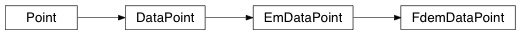

FdemDataPoint¶
@FdemDataPoint_Class Module describing a frequency domain EMData Point that contains a single measurement.
-
class
geobipy.src.classes.data.datapoint.FdemDataPoint.FdemDataPoint(x=0.0, y=0.0, z=0.0, elevation=0.0, data=None, std=None, predictedData=None, system=None, lineNumber=0.0, fiducial=0.0)¶ Class defines a Frequency domain electromagnetic data point.
Contains an easting, northing, height, elevation, observed and predicted data, and uncertainty estimates for the data.
FdemDataPoint(x, y, z, elevation, data, std, system, lineNumber, fiducial)
Parameters: - x (float) – Easting co-ordinate of the data point
- y (float) – Northing co-ordinate of the data point
- z (float) – Height above ground of the data point
- elevation (float, optional) – Elevation from sea level of the data point
- data (geobipy.StatArray or array_like, optional) – Data values to assign the data of length 2*number of frequencies. * If None, initialized with zeros.
- std (geobipy.StatArray or array_like, optional) – Estimated uncertainty standard deviation of the data of length 2*number of frequencies. * If None, initialized with ones if data is None, else 0.1*data values.
- system (str or geobipy.FdemSystem, optional) – Describes the acquisition system with loop orientation and frequencies. * If str should be the path to a system file to read in. * If geobipy.FdemSystem, will be deepcopied.
- lineNumber (float, optional) – The line number associated with the datapoint
- fiducial (float, optional) – The fiducial associated with the datapoint
-
FindBestHalfSpace()¶ Uses the bisection approach to find a half space conductivity that best matches the EM data by minimizing the data misfit
-
calibrate(Predicted=True)¶ Apply calibration factors to the data point
-
createHdf(parent, myName, nRepeats=None, fillvalue=None)¶ Create the hdf group metadata in file parent: HDF object to create a group inside myName: Name of the group
-
forward(mod)¶ Forward model the data from the given model
-
frequencies(system=0)¶ Return the frequencies in an StatArray
-
fromHdf(grp, index=None, **kwargs)¶ Reads the object from a HDF group
-
getFrequency(channel, system=0)¶ Return the measurement frequency of the channel
Parameters: - channel (int) – Channel number
- system (int, optional) – System number
Returns: out – The measurement frequency of the channel
Return type: float
-
getMeasurementType(channel, system=0)¶ Returns the measurement type of the channel
Parameters: - channel (int) – Channel number
- system (int, optional) – System number
Returns: out – Either “In-Phase ” or “Quadrature “
Return type: str
-
hdfName()¶ Reproducibility procedure
-
plot(title='Frequency Domain EM Data', system=0, **kwargs)¶ Plot the Inphase and Quadrature Data for an EM measurement if plotPredicted then the predicted data are plotted as a line, with points for the observed data else the observed data with error bars and linear interpolation are shown. Additional options incolor inmarker quadcolor quadmarker
-
sensitivity(mod, scale=False)¶ Compute the sensitivty matrix for the given model
-
updateSensitivity(J, mod, option, scale=False)¶ Compute an updated sensitivity matrix based on the one already containined in the FdemDataPoint object
-
writeHdf(parent, myName, index=None)¶ Write the StatArray to an HDF object parent: Upper hdf file or group myName: object hdf name. Assumes createHdf has already been called create: optionally create the data set as well before writing